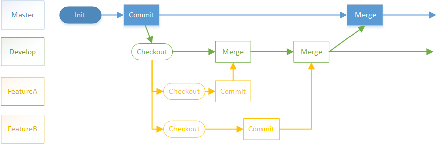

起初我们在master上走向胜利。

后来我们说要测试后发布才能保证质量，所以开个develop分支在这上面修改了再发布。

你改我也改，你要merge到master了，我才改了一半，所以分家吧，互不干扰。 
develop上集成测试发现bug了，开个分支修复了合并回develop。

要发布版本了，develop上冻结，但又有新特性等待合并测试， 再分家，发布前的工作单独在一个分支上做，修改都合并到develop上， 确认准备完毕后合并到master上正式发布。

线上用户反馈问题了，要紧急修复，基于master开分支修复后合并到master和develop。

终于要升级到2.0了，但是还有用户在1.9上反馈问题，开个分支单独维护，不再合并到2.0上来。